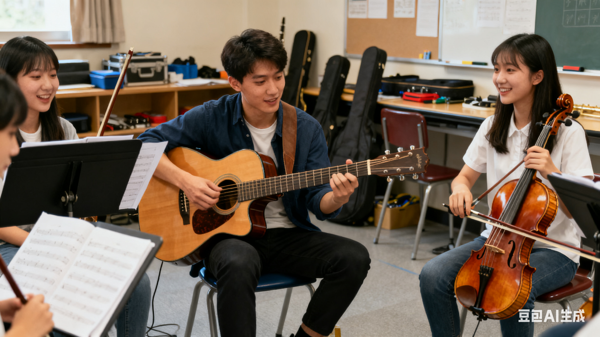

社团简介 |
活动安排 |
风采展示 |
社员故事 |
在线报名 |
返回顶部
社团简介:
大学生乐器爱好者联盟社团简介 当指尖触碰琴弦的震颤化作流淌的旋律，当木管的醇厚与铜管的嘹亮交织成和谐的交响，当一群心怀热爱的年轻人因乐器相聚，便有了 “弦音筑梦” 大学生乐器爱好者联盟的诞生。作为校内极具影响力的艺术文化类社团，我们自成立以来，始终以 “传承乐器文化、搭建交流平台、培育艺术素养” 为核心宗旨，致力于为所有热爱乐器的同学打造一个学习、展示、成长的多元空间，让每一份对音乐的热忱都能找到绽放的舞台。 社团的诞生源于一群乐器爱好者的共同愿景。多年前，几位来自不同专业的同学因一次校园文艺汇演结缘，他们发现校内虽有不少隐藏的 “乐器达人”，却缺乏一个系统的交流渠道 —— 有人精通古典钢琴却苦于无人合奏，有人自学吉他多年却难获专业指导，有人钟爱民族乐器却找不到志同道合的伙伴。为了打破这份孤独，他们发起成立了 “弦音筑梦” 社团，最初仅以吉他、钢琴、古筝三个兴趣小组起步，凭借每周一次的线下交流活动，逐渐吸引了越来越多同学的加入。如今，社团已发展成为拥有注册社员 300 余人、涵盖 12 种乐器门类的综合性社团，下设古典器乐部（钢琴、小提琴、古筝、二胡等）、现代器乐部（吉他、贝斯、架子鼓等）、管乐部（长笛、萨克斯、单簧管等）三大核心部门，以及活动策划组、宣传组、后勤组等职能小组，形成了 “教学 + 实践 + 交流” 三位一体的成熟运营模式。 在教学培养方面，社团始终坚持 “专业引领 + 互助共进” 的理念。我们不仅邀请了学校音乐系的专业老师担任指导顾问，定期开展乐器基础理论、演奏技巧、乐理知识等专题讲座，还组建了一支由高年级优秀社员组成的 “学长导师团”，为新社员提供一对一的入门辅导。针对不同基础的同学，我们设计了分层教学体系：零基础学员可参与 “乐器启蒙营”，从识谱、持琴、基础指法等入门知识学起，通过三个月的系统训练掌握简单曲目演奏；有一定基础的学员可加入 “进阶提升班”，聚焦曲目改编、合奏配合、舞台表现力等技能打磨；而专业水平突出的社员则能参与 “精英演奏团”，参与校级大型演出、校外比赛交流等高水平活动。此外，社团还与校外乐器培训机构、音乐工作室建立了合作关系，为社员提供乐器租赁、专业考级指导、大师课体验等增值服务，让学习资源更加丰富多元。 丰富的实践活动是社团的一大特色，也是社员成长的重要平台。我们坚信，乐器演奏的价值不仅在于技巧的精进，更在于通过音乐传递情感、连接他人。因此，社团每月都会举办形式多样的线下活动：“弦音小聚” 周末交流会让社员们围坐一堂，分享近期的练习成果，互相点评、切磋技艺；“乐器主题沙龙” 聚焦特定乐器或音乐风格，如 “古典吉他与弗拉门戈”“古筝与现代流行乐的融合”，邀请专业音乐人分享行业见解；“校园器乐大赛” 则为全校同学提供了展示才华的舞台，自举办以来已发掘出数十位优秀的校园乐器达人，部分选手还在省级、国家级比赛中斩获佳绩。此外，社团还积极参与校园文化建设，在迎新晚会、毕业季庆典、校园开放日等活动中献上精彩演出，同时组织社员走进社区、养老院开展公益演出，用音乐传递温暖与正能量。 社团的文化内核是 “包容、互助、传承、创新”。在这里，没有专业与非专业的隔阂，无论是怀揣音乐梦想的 “小白”，还是追求更高技艺的 “大神”，都能找到属于自己的位置；老社员耐心传授经验，新社员积极汲取知识，形成了良性的互助氛围；我们重视传统乐器文化的传承，定期开展民乐知识普及活动，让更多年轻人了解古筝、二胡、竹笛等传统乐器的魅力；同时也鼓励创新，支持社员进行跨界融合尝试，如将电子音乐与古典钢琴结合、用吉他改编传统民乐曲目等，让乐器演奏焕发新的活力。多年来，社团培养了一批又一批热爱音乐的毕业生，他们有的成为了专业的音乐从业者，有的在工作之余坚持乐器演奏，用音乐丰富生活，而这份对音乐的热爱与执着，也成为了他们人生中宝贵的财富。 如果你也热爱乐器，渴望找到志同道合的伙伴；如果你想从零开始学习一门乐器，用旋律装点校园生活；如果你希望提升演奏技巧，在更大的舞台上展示自己，那么 “弦音筑梦” 大学生乐器爱好者联盟热忱欢迎你的加入！在这里，你将收获专业的指导、真挚的友谊、展示的舞台，更能在与音乐相伴的日子里，遇见更好的自己。让我们以乐为媒，以梦为马，用指尖的旋律书写青春的华章，让乐器的魅力在校园中久久回荡！
返回顶部
活动安排：
弦音筑梦乐器社团 202X-202X 学年活动安排 为持续践行 “以乐育人、以演促学” 的社团理念，让每一位社员在实践中提升演奏技能、感受音乐魅力，弦音筑梦乐器社团结合社员需求与校园文化建设规划，制定 202X-202X 学年活动安排。本学年活动涵盖基础教学、实践演出、交流竞技、文化传承四大板块，以 “月度有主题、周周有活动” 为原则，兼顾不同基础社员的成长需求，助力社员在音乐之路上稳步前行。 一、学期核心活动框架 本学年分为秋季、春季两个学期，各有侧重又相互衔接。秋季学期以 “基础夯实 + 兴趣培养” 为核心，通过系统教学与轻量实践，帮助新社员快速融入社团、掌握乐器基础技能；春季学期以 “能力提升 + 成果展示” 为目标，通过大型演出、竞技比赛等活动，为社员提供高水平展示平台，检验学习成果。两学期均设置 “迎新季”“社团文化月”“毕业季” 三大特色活动节点，形成 “入门 - 成长 - 绽放” 的完整培养链条。 二、常规活动：每周固定，稳步进阶 乐器基础教学班（每周二 19:00-21:00，音乐楼 203 教室） 针对零基础及初级水平社员，按乐器门类分组教学，涵盖古典器乐（钢琴、古筝、二胡）、现代器乐（吉他、架子鼓）、管乐（长笛、萨克斯）三大类别。教学由 “学长导师团” 与音乐系志愿者共同负责，采用 “理论 + 实操” 模式：前 30 分钟讲解乐理知识（如识谱、节奏、调式），后 90 分钟进行一对一指法指导与集体练习。每周设置 “小目标”，如吉他班首月掌握 C 大调基础和弦，古筝班学会《茉莉花》简易版，月末通过 “小组展示” 检验学习效果，确保社员扎实掌握基础。 合奏排练课（每周四 18:30-20:30，音乐楼合奏厅） 面向有一定基础的社员，按乐器组合分为 “民乐小合奏组”“现代乐队组”“管乐重奏组”。排练内容围绕学期重点演出曲目展开，如秋季学期民乐组排练《步步高》《喜洋洋》等传统曲目，现代乐队组改编《稻香》《平凡之路》等流行歌曲，管乐组练习《蓝色多瑙河》片段。排练由专业指导老师带队，从声部配合、节奏统一、情感表达等维度逐句打磨，培养社员的协作能力与音乐表现力。 周末音乐沙龙（每周日 15:00-17:00，社团活动室） 以轻松交流为主题，形式灵活多样。每周设定不同话题，如 “我的乐器学习故事”“经典曲目赏析与改编”“乐器保养小技巧”，社员可自由分享演奏心得、展示近期练习成果，也可提出学习中遇到的问题，集体讨论解决方案。沙龙还会不定期邀请校外音乐人、毕业学长分享经验，如曾邀请本地乐队吉他手讲解 “即兴演奏技巧”，毕业于音乐学院的学长分享 “乐器考级备考经验”，为社员提供多元学习视角。 三、月度主题活动：特色鲜明，亮点纷呈 九月・迎新季系列活动 迎新宣讲会（9 月第二周）：介绍社团历史、组织架构、学年活动安排，展示优秀社员演出视频，解答新生疑问，现场开放报名与乐器体验（提供吉他、古筝、尤克里里等乐器供新生试奏）。 “破冰” 乐器派对（9 月第四周）：通过 “乐器接龙”“节奏小游戏” 等互动环节，帮助新老社员快速熟悉，同时让新社员初步感受不同乐器的魅力，为后续选择学习方向提供参考。 十月・乐器文化普及月 民乐文化展（10 月第一周）：在校园广场设置展位，展示古筝、二胡、琵琶等传统乐器，搭配图文介绍乐器历史、演奏技法，安排社员现场演奏《高山流水》《二泉映月》等经典曲目，让更多同学了解民乐文化。 “乐器知识小课堂”（每周三中午，食堂门口）：通过展板、手册发放等形式，普及乐器分类、基础乐理等知识，如 “如何区分小提琴与中提琴”“吉他和弦入门小技巧”，吸引更多非社员关注音乐学习。 十一月・校园音乐展演月 “弦音初响” 新人演奏会（11 月中旬）：为秋季学期新社员打造的首次登台机会，演出曲目以基础练习曲为主，如吉他弹唱《送别》、古筝独奏《渔舟唱晚》片段，帮助社员克服舞台紧张感，积累演出经验。 “班级音乐角” 合作活动（11 月下旬）：与各院系班级合作，走进班级开展小型演出，如为大一新生班级演奏迎新曲目，为考研班级送上舒缓的轻音乐，丰富校园文化生活。 十二月・年末成果展示月 “冬日弦歌” 室内音乐会（12 月中旬）：作为秋季学期核心演出，邀请全校师生观看，节目涵盖民乐合奏、现代乐队表演、管乐重奏等，展现学期排练成果。如 202X 年音乐会中，民乐组合奏《金蛇狂舞》点燃现场气氛，现代乐队改编的《圣诞结》引发全场合唱。 年度优秀社员评选（12 月下旬）：根据社员参与活动积极性、学习进步幅度、演出表现等维度，评选 “最佳新人”“最佳演奏者”“优秀志愿者” 等荣誉，颁发证书与乐器配件（如吉他拨片、古筝指甲套）作为奖励。 三月・春季提升月 乐器考级指导营（3 月每周六）：针对计划参加乐器考级的社员，邀请专业老师开展专项辅导，讲解考级曲目难点、评分标准，组织模拟考级，帮助社员高效备考。 跨校乐器交流赛（3 月下旬）：与周边高校乐器社团联合举办，设置 “独奏组”“合奏组” 两个组别，曲目不限风格，通过专业评委打分与观众投票评选获奖选手，促进校际间的音乐交流。 四月・社团文化月 “乐器创意改编” 大赛（4 月中旬）：鼓励社员打破传统，对经典曲目进行跨界改编，如用古筝演奏流行歌曲、用吉他演绎民乐旋律，评选 “最佳创意奖”“最受欢迎奖”，优秀作品将在后续演出中重点呈现。 “音乐与生活” 主题讲座（4 月下旬）：邀请音乐心理学老师分享 “音乐对情绪的调节作用”，或邀请乐器制作师讲解 “乐器的制作工艺与背后的故事”，拓宽社员的音乐视野。 五月・毕业季献礼月 “致青春” 毕业专场音乐会（5 月中旬）：为毕业社员打造的告别演出，毕业社员可自主选择演出曲目，或与学弟学妹合作表演，用音乐定格校园回忆。如 202X 届毕业社员与新社员合作演奏《同桌的你》，引发全场情感共鸣。 “乐器传承” 交接活动（5 月下旬）：毕业社员可将自己闲置的乐器（如吉他、乐谱）捐赠给社团，由社团转赠给有需要的新社员，同时分享自己的学习笔记与经验，实现音乐精神的传承。 四、特殊活动：机遇难得，助力成长 校外演出实践（不定期） 与社区、养老院、公益组织建立长期合作，组织社员参与公益演出。如重阳节前往养老院演奏《茉莉花》《甜蜜蜜》等经典曲目，为老人送上温暖；节假日参与社区文化节，表演民乐合奏或现代乐队节目，提升社团社会影响力。 乐器大师课（每学期 1-2 次） 邀请省内外知名乐器演奏家、音乐教授开展专项指导。如曾邀请省民族乐团古筝首席演奏家讲解 “古筝快速指序技巧”，邀请高校吉他专业教师分享 “古典吉他的情感表达”，让社员近距离接触行业大咖，学习专业演奏技法。 乐器展销与体验活动（每年 5 月、11 月） 联合校外乐器品牌举办校园展销会，提供乐器折扣购买、免费调音、配件赠送等福利，同时设置 “乐器体验区”，让社员与非社员有机会试奏高端乐器（如进口钢琴、手工吉他），感受不同乐器的音质与手感。 五、活动参与与保障 参与方式：常规活动通过社团微信群发布通知，社员提前报名；月度及特殊活动通过校园 APP、社团公众号发布预告，开放线上报名通道，部分热门活动（如大师课、校外演出）将根据社员平时表现与报名顺序筛选参与人员。 物资保障：社团活动室配备常用乐器（如吉他 10 把、古筝 5 台、架子鼓 1 套）、音响设备、乐谱架等，供社员日常练习使用；演出活动所需的服装、道具、场地租赁费用由社团经费与学校社团扶持资金共同承担，确保活动顺利开展。 反馈机制：每次活动后通过问卷星收集社员意见，如教学内容是否贴合需求、活动形式是否新颖、时间安排是否合理，根据反馈及时调整活动方案，不断提升活动质量。 本学年，弦音筑梦乐器社团将以丰富多元的活动为载体，让每一位社员在音乐实践中收获技能、友谊与成长，同时为校园文化注入更多音乐活力。我们期待每一位热爱乐器的同学积极参与，共同书写属于我们的音乐篇章！
活动安排
【XX社 2025 年春季学期活动安排表】
活动名称
活动地点
活动时间
活动负责人
【新成员见面会】
502
13：30
张三
【XX乐器基础教学公开课】
502
20：00
李四
返回顶部
风采展示：
弦音筑梦乐器社团风采展示：以乐为帆，绽放青春华章 自成立以来，弦音筑梦乐器社团始终以音乐为纽带，在校园内外搭建起展示才华的舞台。从校园迎新晚会的惊艳亮相，到省级比赛的荣誉加冕；从社区公益演出的温暖传递，到跨校交流的精彩碰撞，社团成员用指尖的旋律书写热爱，用专业的素养诠释追求，在一次次演出与实践中，勾勒出属于 “弦音人” 的独特风采。这份风采，藏在悠扬的乐声里，刻在社员成长的足迹中，更印在每一位观众的记忆深处。 一、舞台风采：从校园角落到省级赛场，每一次演出都是热爱的绽放 提及社团的舞台风采，最令人印象深刻的莫过于每年年末的 “冬日弦歌” 室内音乐会。这场音乐会作为社团秋季学期的成果展示盛宴，早已成为校园文化活动的 “保留节目”。202X 年的 “冬日弦歌” 音乐会，在学校大礼堂拉开帷幕，近 500 个座位座无虚席。音乐会以 “传承与创新” 为主题，分为 “民乐雅韵”“现代律动”“跨界融合” 三个篇章。在 “民乐雅韵” 篇章中，古筝合奏《盛世国乐》一开场便惊艳全场 ——10 位社员身着传统汉服，指尖在筝弦上流转，时而激昂如江河奔涌，时而婉转如流水潺潺，配合着背景屏上的水墨动画，将传统民乐的魅力展现得淋漓尽致，台下掌声经久不息。而在 “跨界融合” 篇章，社团的创新尝试更是让观众眼前一亮：二胡与吉他合奏《青花瓷》，二胡的悠扬与吉他的轻快碰撞出奇妙的火花，熟悉的旋律以全新的形式呈现，引得台下观众跟着轻轻哼唱；钢琴与架子鼓改编的《菊次郎的夏天》，则用灵动的节奏驱散了冬日的寒冷，让现场氛围变得轻松愉悦。整场音乐会历时两个小时，18 个节目无缝衔接，从古典到现代，从独奏到合奏，全方位展现了社团的多元音乐风格，演出结束后，不少观众在社团公众号留言：“没想到校园社团能有如此专业的水准，这场音乐会太值了！” 除了校内演出，社团在省级舞台上的表现同样亮眼。202X 年，社团选派 “民乐小合奏组” 参加 “全省大学生艺术展演”，凭借改编曲目《丝路新语》斩获器乐类二等奖。为了这场比赛，社员们付出了近三个月的努力 —— 每天课后直奔排练厅，从声部配合到情感表达，逐句打磨细节。比赛当天，面对来自全省 30 多所高校的强劲对手，社员们沉着冷静，用精湛的演奏讲述了丝绸之路的悠久故事：古筝的清脆模拟驼铃叮咚，二胡的醇厚演绎风沙漫漫，琵琶的急促展现商队穿行的热闹，最终以默契的配合和饱满的情感征服了评委。评委在点评中说道：“这支队伍虽以学生为主，但演奏技巧娴熟，对曲目的理解深刻，展现出了极强的团队协作能力和艺术感染力。” 这次获奖，不仅为学校赢得了荣誉，更让社团的名字在全省高校乐器社团中崭露头角。 二、社员风采：从 “音乐小白” 到 “舞台主角”，成长是最动人的风景 社团的风采，不仅体现在集体的荣誉中，更藏在每一位社员的成长故事里。在这里，有太多从 “零基础” 起步，最终站上舞台中央的 “逆袭” 故事，来自 202X 级计算机专业的李同学便是其中之一。刚加入社团时，李同学对乐器一窍不通，只是单纯喜欢吉他弹唱的氛围。报名 “乐器启蒙营” 后，他从最基础的持琴姿势、和弦按法学起，每天利用晚自习后的时间在社团活动室练习，手指磨出了茧子也不放弃。在 “学长导师团” 的耐心指导下，他进步飞快，三个月后便能完整弹唱《成都》；半年后，他加入了 “现代乐队组”，担任节奏吉他手；一年后，他在 “校园器乐大赛” 中凭借原创弹唱《青春代码》获得 “最佳创作奖”。如今的他，不仅是社团的骨干成员，还经常带领新社员练习，分享自己的学习经验。“如果没有社团这个平台，我可能永远不会发现自己对音乐的热爱，更不会有勇气站上舞台唱歌。” 李同学的话，道出了许多社员的心声。 社员的风采，还体现在对音乐的执着与坚守上。202X 级汉语言文学专业的张同学，是社团古筝组的 “定心丸”。她从小学习古筝，加入社团后主动承担起 “学长导师” 的职责，每周为零基础社员开展两次辅导。为了让教学更有效，她专门整理了《古筝入门手册》，把复杂的指法拆解成简单的步骤，还录制了示范视频供社员课后复习。在准备 “全省大学生艺术展演” 期间，她作为古筝声部的负责人，每天提前一小时到达排练厅调试乐器，帮社员纠正指法错误，排练结束后还会留下来整理排练笔记，总结当天的问题。有一次，她因为感冒嗓子沙哑，却依然坚持用手势和文字指导社员，直到排练结束才去医院就诊。“看到大家从不会到会，从紧张到自信，我就觉得所有的付出都值得。” 张同学的责任感与敬业精神，不仅感染了身边的社员，也让社团的凝聚力变得更强。 三、活动风采：从文化普及到公益传递，用音乐书写责任与担当 社团的风采，不止于舞台上的光鲜，更在于走出校园、服务社会的责任担当。每年十月的 “乐器文化普及月”，社团都会在校园广场举办 “民乐文化展”，成为校园里一道独特的风景线。202X 年的文化展上，社团设置了 “乐器体验区”“历史讲解区”“现场演奏区” 三个板块。在 “乐器体验区”，不少同学好奇地拿起古筝、二胡尝试演奏，社员们则耐心地指导他们正确的持琴姿势和简单的指法；在 “历史讲解区”，图文展板详细介绍了每种乐器的起源、发展历程和经典曲目，社员们还准备了趣味问答，答对的同学可以获得定制的乐器形状书签；在 “现场演奏区”，社员们轮番上阵，演奏《茉莉花》《紫竹调》等经典民乐，吸引了大批同学驻足观看，甚至有不少老师也加入了欣赏的行列。一位参与体验的同学说：“以前总觉得民乐离我们很远，今天亲手弹了古筝，才发现原来民乐这么有趣，以后我也要学习一种传统乐器。” 除了文化普及，社团还积极参与公益演出，用音乐传递温暖。202X 年重阳节，社团组织 15 名社员前往市区养老院开展 “情暖夕阳” 公益演出。演出前，社员们精心准备了老人们熟悉的曲目，如《东方红》《洪湖水浪打浪》《茉莉花》等。演出当天，老人们坐在院子里，脸上洋溢着期待的笑容。当二胡独奏《二泉映月》的旋律响起时，一位老奶奶不禁跟着轻轻哼唱；当社员们合唱《我和我的祖国》时，老人们纷纷举起手，跟着节奏拍手，现场气氛温馨又热烈。演出结束后，社员们还陪老人们聊天、下棋，帮他们整理房间。养老院的院长说：“谢谢孩子们带来这么精彩的演出，老人们今天特别开心，希望你们以后常来。” 这次公益演出，不仅让老人们感受到了关爱，也让社员们明白了音乐的另一种意义 —— 它不仅能带来快乐，还能传递温暖，连接人心。 四、合作风采：跨校交流、校企联动，在碰撞中拓宽音乐视野 社团的风采，还体现在开放包容的合作精神上。为了拓宽社员的音乐视野，社团经常与周边高校乐器社团开展交流活动。202X 年春季，社团与隔壁师范大学的 “知音乐器社” 联合举办了 “校际乐器交流赛”，两校共派出 30 多组选手参赛，涵盖独奏、合奏等多种形式。比赛中，两校社员相互学习、相互借鉴：我校社员的现代乐队改编曲目让对方眼前一亮，而对方的民乐合奏则让我校社员深受启发。比赛结束后，两校社员还一起开展了 “合奏排练 workshop”，共同排练《难忘今宵》，不同学校、不同专业的同学因音乐相聚，在协作中结下了深厚的友谊。师范大学 “知音乐器社” 的社长说：“这次交流赛不仅让我们看到了彼此的优势，也为两校社团的长期合作打下了基础，希望以后能有更多这样的交流机会。” 此外，社团还与校外乐器培训机构、音乐工作室建立了合作关系，为社员提供更多学习和实践的机会。202X 年，社团与本地知名的 “星乐琴行” 合作开展 “乐器大师课”，邀请琴行的专业老师为社员讲解 “吉他指弹技巧”“古筝快速指序” 等进阶内容。大师课上，老师通过现场示范、一对一指导的方式，帮助社员解决了学习中遇到的难点问题。课后，琴行还为社员提供了乐器免费调音、折扣购买配件等福利。这种校企联动的模式，不仅为社员提供了专业的学习资源，也为社团的发展注入了新的活力。 从校园舞台到省级赛场，从文化普及到公益传递，从校内学习到跨校交流，弦音筑梦乐器社团用一场场精彩的演出、一个个动人的故事、一次次温暖的行动，展现了当代大学生的艺术素养与责任担当。在这里，音乐不仅是一种爱好，更是一种追求；不仅是一种技能，更是一种精神。未来，社团将继续以乐为帆，带领更多热爱音乐的同学，在青春的舞台上绽放更多光彩，让弦音悠扬，让梦想启航！

返回顶部
社员故事:
弦音筑梦乐器社团社员故事：以乐为友，不负韶华 在弦音筑梦乐器社团的大家庭里，每一位社员都带着对音乐的赤诚而来。他们来自不同专业、有着不同基础，却因同一热爱相聚，在琴弦的震颤与旋律的流淌中，书写着属于自己的成长故事。这些故事里，有坚持与汗水，有友谊与陪伴，更有音乐赋予的勇气与蜕变，让每一个平凡的日子都因乐声而闪耀。 一、李星辰：从 “指尖生茧” 到乐队主唱，吉他是青春的底气 “如果不是社团，我可能永远只是那个躲在角落听吉他曲的内向男生。” 说这句话时，李星辰正抱着他的吉他，在社团活动室为即将到来的毕业专场音乐会排练。如今的他，是社团现代乐队组的主唱兼节奏吉他手，站在舞台上从容自信，可谁能想到，三年前的他，还是个连持琴姿势都要反复练习的 “小白”。 李星辰来自计算机专业，性格内向的他，刚入学时总觉得和周围格格不入。一次偶然的机会，他在校园广场看到社团的 “乐器体验日” 活动，吉他摊位前流淌的《晴天》旋律，瞬间击中了他的内心。“我从小就喜欢音乐，但一直没敢尝试学习乐器，那天鼓起勇气试弹了一下，学长们耐心的指导让我突然有了信心。” 就这样，李星辰加入了社团的 “吉他启蒙营”。 初学吉他的日子充满了挑战。按弦的手指很快磨出了水泡，疼得他晚上睡不着觉，可他舍不得放弃，贴上创可贴继续练习；复杂的和弦转换总是出错，他就把和弦图设成手机壁纸，吃饭、走路时都在默默记诵。社团的 “学长导师” 张宇看出了他的执着，主动提出每周额外为他辅导一次。“张宇学长不仅教我技巧，还告诉我‘音乐是用来表达的，不是用来完美的’，这句话让我放下了心理负担。” 为了跟上进度，李星辰把每天晚自习后的时间都交给了社团活动室。从简单的分解和弦到完整的弹唱曲目，从紧张到不敢开口到能在周末沙龙中主动分享，他的进步被所有人看在眼里。大二那年，社团组建新的现代乐队，李星辰凭借稳定的演奏和独特的嗓音，成功当选主唱。第一次站上校级迎新晚会的舞台时，他紧张得手心冒汗，可当琴弦响起，熟悉的旋律流淌而出，台下观众的掌声让他瞬间找回了自信。“那一刻我明白，吉他不仅是乐器，更是我表达自己的方式，是社团给了我站在舞台中央的勇气。” 如今的李星辰，不仅能熟练演奏数十首曲目，还开始尝试原创。他写的《代码与琴弦》，将计算机专业的日常与对音乐的热爱相结合，在校园里广为流传。“这首歌唱的是我自己，也是所有在热爱中坚持的人。” 毕业在即，李星辰最大的愿望，是在专场音乐会上和队友们一起，把这首原创歌曲送给社团，送给陪伴他成长的每一个人。“是社团让我找到了归属感，吉他让我变得更勇敢，这段经历会是我青春里最珍贵的回忆。” 二、陈语然：古筝为伴，在传统与现代间架起桥梁 “古筝不是只能演奏古典曲目，它也能很‘潮’！” 说这句话时，陈语然正在调试她的古筝，准备排练一首改编版的《孤勇者》。作为社团民乐部的骨干，这位汉语言文学专业的女生，用自己的坚持与创新，让更多人看到了传统乐器的无限可能。 陈语然与古筝的缘分，始于童年。“我小时候被妈妈逼着学古筝，当时觉得特别枯燥，直到高中时听到古筝版的《青花瓷》，才突然发现原来传统乐器也能演绎流行音乐。” 带着这份新的认知，她考入大学后第一时间加入了弦音筑梦社团。本以为有基础的自己能轻松融入，可初入社团时的一次交流活动，却给了她不小的打击。 “当时我演奏了一首传统曲目《渔舟唱晚》，本以为会得到认可，可一位学长提出，‘传统曲目很美，但能不能让它更贴近我们的生活？’这句话让我陷入了思考。” 陈语然意识到，想要让更多年轻人喜欢古筝，就不能墨守成规。于是，她开始尝试将流行音乐与古筝演奏结合。 改编之路并不容易。流行歌曲的节奏与古筝的传统演奏技法差异很大，很多旋律无法直接套用。为了攻克这个难题，她泡在图书馆查阅资料，反复听原曲拆解节奏；向社团的吉他手、键盘手请教，学习和声编排；甚至自掏腰包购买编曲软件，一点点尝试改编。“最难忘的是改编《卡路里》时，为了配合歌曲的快节奏，我需要快速转换指法，练到手指抽筋，可当第一次完整弹奏出来时，那种成就感难以言喻。” 她的努力很快有了回报。在社团的 “乐器创意改编大赛” 中，她的古筝版《孤勇者》惊艳全场，激昂的旋律与古筝独特的音色碰撞出奇妙的火花，赢得了 “最佳创意奖”。之后，她又陆续改编了《稻香》《七里香》等热门歌曲，在校园里掀起了一股 “古筝热”。不少同学因为她的演奏，主动报名加入社团学习古筝，甚至有其他院系的同学专门来找她请教改编技巧。 除了推广古筝，陈语然还主动承担起社团民乐组的教学工作。她整理了《古筝入门趣味教程》，把复杂的乐理知识转化为通俗易懂的语言，还设计了 “流行曲目入门” 课程，让零基础的社员能快速感受到学习古筝的乐趣。“我希望通过自己的努力，让更多人了解古筝、喜欢古筝，让传统乐器在我们这一代焕发出新的活力。” 如今，陈语然带领的民乐小合奏组，已经能熟练演奏多首传统与现代结合的曲目，成为社团演出中的 “王牌节目”。 三、王浩宇：架子鼓敲响的，是治愈孤独的节拍 “架子鼓的每一次敲击，都像是在释放心里的压力，让我觉得不再孤单。” 王浩宇来自机械工程专业，这个看起来阳光开朗的男生，曾经是个被社交焦虑困扰的 “独行侠”。而架子鼓与社团，成了他走出孤独的钥匙。 王浩宇的父母常年在外工作，他从小就习惯了独自生活。进入大学后，面对陌生的环境和人群，他总是下意识地回避社交，课余时间大多待在宿舍打游戏。一次，他在社团招新海报上看到了架子鼓的图片，“小时候在电视上看到架子鼓表演，觉得特别酷，一直想试试，那天就抱着‘反正没人认识我’的心态报了名。” 加入社团后，王浩宇才发现，学习架子鼓比他想象中难得多。“不仅要掌握复杂的节奏型，还要协调四肢，刚开始练习时，手脚总是不听使唤，感觉自己像个‘机器人’。” 更让他困扰的是，架子鼓练习需要与乐队其他成员配合，而他的社交焦虑让他不敢主动与人交流。每次排练，他都只是默默坐在角落里，按照谱子机械地敲击，不敢发表自己的意见。 社团的鼓手学长赵磊注意到了他的异常。“赵磊学长没有直接问我怎么了，而是每次排练结束后，都会留下来陪我单独练习，和我聊架子鼓的历史、喜欢的鼓手，慢慢打开了我的话匣子。” 赵磊告诉王浩宇，架子鼓是乐队的 “灵魂”，不仅需要精准的节奏，更需要与队友的默契配合，“音乐是需要交流的，你可以通过鼓点表达自己，让队友感受到你的情绪。” 在赵磊的鼓励下，王浩宇开始尝试改变。他主动向队友请教节奏问题，在排练中大胆提出自己的想法；周末沙龙上，他第一次完整地演奏了《光辉岁月》的鼓点，赢得了社员们的掌声。“那种被认可的感觉，让我第一次觉得自己融入了集体。” 随着练习的深入，王浩宇的架子鼓技艺越来越娴熟，性格也变得开朗起来。他开始主动组织队友排练，在社团活动中担任主持人，甚至能主动和陌生人分享自己的学习心得。 “架子鼓教会我的，不仅是节奏，还有勇气。” 王浩宇说，现在的他，不再害怕社交，因为他知道，社团里有一群和他一样热爱音乐的朋友，“每次和乐队一起演出，当鼓点响起，吉他、贝斯、键盘的声音交织在一起，我都会觉得特别温暖。音乐让我们成为了一家人，而架子鼓，就是我表达热爱的方式。” 如今，王浩宇已经成为社团的 “气氛担当”，他的鼓点总能点燃现场的氛围，而他的故事，也激励着更多内向的社员勇敢走出自己的小世界。 四、林晓悦：用小提琴治愈迷茫，在合奏中找到方向 “刚上大二时，我一度陷入了迷茫，不知道自己未来想做什么，是小提琴和社团，让我找到了前进的方向。” 林晓悦来自经济学专业，这个看似理性的女生，却对小提琴有着深深的执念。 林晓悦从小学习小提琴，曾经梦想成为一名专业的小提琴演奏家。可高考时，在父母的建议下，她选择了就业前景更好的经济学专业。进入大学后，繁杂的专业课程让她喘不过气，曾经热爱的小提琴也被束之高阁。“那段时间，我总觉得生活少了点什么，看着身边的同学都有明确的目标，而我却浑浑噩噩，特别焦虑。” 一次偶然的机会，林晓悦在校园广播里听到了社团合奏的《卡农》，小提琴的旋律温柔而有力量，瞬间唤醒了她对音乐的热爱。“我突然意识到，我不能放弃小提琴，它是我生活的一部分。” 于是，她加入了社团的古典器乐部，重新拾起了搁置已久的小提琴。 刚开始恢复练习时，林晓悦遇到了不少困难。长时间没有练习，手指的灵活性大不如前，曾经熟练的曲目也变得生疏。“有好几次，我练到一半就想放弃，觉得自己再也回不到以前的水平了。” 这时，社团的指导老师李教授看出了她的焦虑。“李教授告诉我，音乐不是用来攀比的，是用来愉悦自己的，只要坚持练习，就一定会有进步。” 在李教授的鼓励下，林晓悦调整了心态，每天坚持练习一小时。清晨的校园湖畔、深夜的社团活动室，都留下了她练琴的身影。为了提升自己，她加入了社团的 “弦乐重奏组”，与小提琴、中提琴、大提琴社员一起排练。合奏的过程充满了挑战，不同声部的配合、节奏的统一、情感的表达，都需要反复打磨。“记得排练《蓝色多瑙河》时，我们因为一个声部的节奏问题争论了很久，最后大家坐下来，一句一句地抠细节，直到深夜才达成共识。” 在合奏的过程中，林晓悦不仅提升了自己的演奏技巧，更找到了久违的快乐。“当不同乐器的声音交织在一起，形成和谐的旋律时，我会觉得特别治愈。” 同时，社团的活动也让她对自己的未来有了新的规划。“我发现自己特别喜欢音乐教育，喜欢和大家一起分享小提琴的魅力。” 于是，她开始利用课余时间学习音乐教育相关的知识，考取小提琴教师资格证，还在社团的 “乐器启蒙营” 中担任小提琴导师，为零基础的社员授课。 “现在的我，不再迷茫了。” 林晓悦说，虽然她没有成为专业的小提琴演奏家，但音乐已经融入了她的生活。“我希望以后能成为一名音乐老师，把自己对小提琴的热爱传递给更多人。而这一切，都要感谢社团给我的平台，感谢队友们的陪伴。” 如今，林晓悦在社团的 “弦乐重奏组” 担任第一小提琴手，她的演奏温柔而富有感染力，而她的故事，也让更多人明白，热爱可抵岁月漫长。 五、张启航：从 “乐器小白” 到社团后勤担当，用陪伴守护热爱 在弦音筑梦社团里，有这样一位特殊的社员，他不会演奏任何乐器，却成为了社团不可或缺的存在。他就是张启航，来自行政管理专业的社团后勤组组长，用自己的方式守护着大家的音乐梦想。 张启航加入社团，纯属 “意外”。大一那年，他的室友是社团的古筝社员，经常拉着他去看社团的活动。“每次看到大家为了排练废寝忘食，为了演出精心准备，我都特别感动。虽然我不会演奏乐器，但我想为这个温暖的集体做点什么。” 于是，在室友的推荐下，张启航加入了社团的后勤组。 后勤工作看似简单，却繁琐而重要。活动场地的申请、乐器的搬运与保养、演出道具的准备、活动现场的布置…… 每一项都需要细心和耐心。为了保证活动顺利开展，张启航总是提前做好规划。每次大型演出前，他都会提前三天去场地考察，测量舞台尺寸，规划乐器摆放位置；演出当天，他凌晨五点就起床，和后勤组的同学一起搬运乐器、搭建舞台、调试音响，直到演出结束，又忙着收拾场地，往往要忙到深夜。 “印象最深刻的是去年的‘冬日弦歌’音乐会，演出前一天，吉他组的一把吉他突然出现了故障，无法正常使用。” 张启航回忆道，当时距离演出只有不到 24 小时，大家都急得团团转。“我想到校外有一家乐器行，于是立刻打车过去，和老板沟通，最终租到了一把合适的吉他，解决了燃眉之急。” 那天晚上，张启航回到宿舍时已经凌晨一点多，可想到能为大家解决问题，他觉得一切都值得。 除了后勤保障，张启航还是社团的 “暖心大哥”。他记得每一位社员的生日，会在社团微信群里组织大家送上祝福；有社员因为学习压力大而情绪低落时，他会主动谈心，鼓励他们；新社员加入时，他会耐心地介绍社团的情况，帮助他们快速融入集体。“虽然我不会演奏乐器，但我能感受到大家对音乐的热爱，能为他们做一些力所能及的事情，我觉得特别有意义。” 在社团的三年里，张启航见证了许多社员的成长，也收获了真挚的友谊。“社团就像一个大家庭，大家互相帮助、互相支持，这种感觉特别温暖。” 如今，张启航已经成为社团的后勤组组长，带领着一群志同道合的同学，为社团的活动保驾护航。“虽然我不能站在舞台上演奏，但看到大家在舞台上发光发热，我就觉得特别骄傲。我会一直守护着这个大家庭，守护着大家的音乐梦想。” 在弦音筑梦乐器社团里，这样的故事还有很多。他们因乐相聚，以乐为友，在音乐的世界里相遇、相知、相伴。这些故事里，有坚持与热爱，有友谊与陪伴，更有音乐赋予的勇气与成长。或许他们的演奏技巧不是最专业的，但他们对音乐的赤诚足够动人；或许他们的故事不够轰轰烈烈，但每一份努力与坚守都值得被铭记。正是这些平凡而温暖的故事，让社团充满了凝聚力与生命力，让音乐的光芒照亮了每一个人的青春之路。未来，还会有更多热爱音乐的人加入这个大家庭，书写属于他们的精彩故事，让弦音悠扬，让梦想远航。
返回顶部
在线报名:
弦音筑梦乐器社团在线报名指南：开启你的音乐之旅 音乐，是跨越语言的情感表达，是陪伴青春的温暖旋律。如果你怀揣对乐器的热爱，渴望找到一群志同道合的伙伴，一起探索音乐的奥秘、绽放指尖的光彩，那么弦音筑梦乐器社团的在线报名通道，就是你开启音乐之旅的第一扇门。本指南将详细介绍社团在线报名的全流程、注意事项、社员权益及常见问题，让每一位热爱音乐的同学都能清晰了解报名细节，轻松加入这个充满活力与温暖的音乐大家庭。 一、报名意义：为什么选择加入弦音筑梦？ 在正式介绍报名流程前，我们想先和你聊聊，加入弦音筑梦能为你带来什么。作为校内成立 8 年、拥有 300 余名社员的成熟乐器社团，我们始终以 “让音乐点亮青春，让热爱成就自我” 为目标，为社员提供全方位的成长支持。无论你是零基础的 “音乐小白”，还是有一定基础的 “乐器达人”，都能在这里找到属于自己的位置： 专业教学资源：音乐系老师担任指导顾问，高年级优秀社员组成 “学长导师团”，提供一对一入门辅导与进阶技巧培训，从识谱、指法到合奏配合，系统覆盖乐器学习全流程； 多元实践平台：全年开展 20 余场活动，包括迎新晚会演出、校园器乐大赛、公益慰问演奏、跨校交流赛等，让你在实战中提升演奏水平，积累舞台经验； 温暖社群氛围：定期组织音乐沙龙、乐器体验日、节日联欢会等活动，帮助你快速结识同好，在交流中收获友谊，在协作中感受音乐的凝聚力； 专属福利保障：社团活动室免费提供吉他、古筝、架子鼓等常用乐器供日常练习，与校外乐器行合作提供折扣租赁、调音保养服务，为你的音乐学习降低成本。 无论你是想学习一门新技能丰富校园生活，还是想在音乐中缓解学业压力、提升艺术素养，弦音筑梦都能为你提供广阔的平台。而在线报名，就是你与这份热爱的第一次正式连接。 二、报名全流程：从填写信息到成为社员的 5 个步骤 为了让报名过程便捷高效，社团采用 “线上填写 + 线下审核” 的双流程模式，全程无需奔波，仅需 5 个简单步骤，即可完成报名： 步骤 1：确认报名时间与对象 报名时间：每年 9 月迎新季（9 月 1 日 - 9 月 30 日）为集中报名期，其余时间为滚动报名期（每月 1 日 - 10 日开放报名通道），全年接受新成员加入； 报名对象：全体在校本科生、研究生，不限专业、不限年级，无论是否有乐器基础，只要热爱音乐、愿意投入时间学习，均可报名。 特别提示：迎新季集中报名期间，社团会同步举办 “乐器体验日” 线下活动（通常在 9 月第二周周末），可现场试奏乐器、与社员交流后再提交报名，如需了解活动详情，可关注社团公众号 “弦音筑梦乐器社” 获取最新通知。 步骤 2：填写在线报名表单 表单入口：有两种方式可进入报名页面： 微信搜索并关注社团公众号 “弦音筑梦乐器社”，点击菜单栏 “加入我们 - 在线报名”，即可跳转至表单页面； 扫描校园内社团招新海报上的报名二维码（海报通常张贴在大学生活动中心、各教学楼大厅、食堂门口等区域），直接进入表单。 填写内容：表单内容简洁明了，主要包括基础信息与兴趣选择两部分： 基础信息：姓名、学号、院系、年级、联系电话、微信账号（用于后续通知）； 兴趣选择：意向学习的乐器类别（可多选，如古典器乐：钢琴 / 古筝 / 二胡；现代器乐：吉他 / 架子鼓 / 贝斯；管乐：长笛 / 萨克斯 / 单簧管）、是否有乐器基础（无基础 / 初级 / 中级 / 高级）、每周可投入练习的时间（1-2 小时 / 3-5 小时 / 5 小时以上）。 填写提示：请务必确保联系电话与微信账号准确无误，这是社团与你沟通的主要渠道；意向乐器类别可根据兴趣选择，无需担心 “选择后无法更改”，入社后可根据实际体验调整学习方向。 步骤 3：提交材料与等待审核 所需材料：填写完表单后，需根据提示上传 1 份材料 —— 学生证照片（清晰拍摄个人信息页，用于核实身份），无需提交其他复杂证明； 审核周期：集中报名期内，审核周期为 3 个工作日；滚动报名期内，审核周期为 5 个工作日。审核结果将通过微信私信通知（由社团官方账号 “弦音小助手” 发送），包含 “审核通过” 或 “需补充材料” 两种情况，若超过周期未收到通知，可通过公众号后台留言咨询。 审核标准：社团报名无 “淘汰制”，审核仅为核实在校身份与确保报名信息完整，只要你是在校学生、填写信息真实，均可通过审核，真正做到 “零门槛加入”。 步骤 4：加入社员社群，完成入社登记 加入社群：审核通过后，“弦音小助手” 会发送社员微信群二维码与 QQ 群号，扫码加入即可。社群内会发布活动通知、教学资料、乐器练习打卡等内容，是社员日常交流的主要平台； 入社登记：入群后，需在群内填写《社员登记确认表》（电子表格，内容与报名表单一致，用于最终确认信息），并修改群备注为 “院系 + 姓名 + 意向乐器”（如 “计算机 - 张三 - 吉他”），方便后续分组与沟通。 提示：为保证社群秩序，群内禁止发布无关广告、刷屏信息，若有违规行为，将被移出社群并取消社员资格，望大家共同维护良好的交流环境。 步骤 5：参加新社员入门引导会 活动安排：审核通过后的 1-2 周内，社团会组织新社员入门引导会（线上线下结合，线下地点为社团活动室，线上同步开启腾讯会议直播），时长约 1.5 小时； 会议内容：包括社团组织架构介绍（各部门职能、负责人联系方式）、学年活动规划（常规教学、演出安排、特色活动）、乐器学习建议（不同乐器入门技巧、练习方法）、社员权益说明（免费使用乐器、参与活动的方式），并设置互动问答环节，解答新社员的疑问； 重要性：入门引导会是快速了解社团的关键环节，建议尽量参加线下会议，若因课程冲突无法到场，可观看会议回放（会后会上传至群文件），确保不遗漏重要信息。 三、社员权益与后续支持：让你的音乐学习无后顾之忧 报名成功、成为正式社员后，你将享受社团提供的多项专属权益，同时获得全方位的学习支持，帮助你在音乐之路上稳步前行： 1. 免费乐器使用与练习场地 乐器提供：社团活动室配备吉他（15 把）、古筝（8 台）、尤克里里（10 把）、架子鼓（2 套）、长笛（5 支）、萨克斯（3 支）等常用乐器，社员可在开放时间内（每日 10:00-22:00，节假日正常开放）免费借用，无需自带乐器； 练习场地：除社团活动室（配备音响、乐谱架、调音器等设备）外，社团还与学校音乐楼协商，为社员争取到每周 2 次的合奏厅使用权限（用于乐队排练、集体教学），场地预约可通过社员群内的 “场地预约表” 提交申请，先到先得。 2. 分层教学与个性化指导 分层教学：根据社员基础分为 “零基础班”“进阶班”“精英班”，针对性制定教学计划： 零基础班：从识谱、基础指法教起，搭配简单练习曲（如吉他《小星星》、古筝《茉莉花》片段），帮助快速入门； 进阶班：聚焦曲目改编、合奏配合、舞台表现力，学习难度稍高的曲目（如吉他指弹《卡农》、二胡《赛马》）； 精英班：针对有较高基础的社员，提供专业考级指导、比赛备赛培训，推荐参与校级以上演出； 个性化指导：“学长导师团” 提供一对一辅导，可通过群内预约导师时间，针对个人学习难点进行专项讲解，解决 “集体教学跟不上” 的问题。 3. 优先参与活动与展示机会 活动参与：社员可优先报名参与社团的所有活动，包括校外公益演出、跨校交流赛、乐器大师课等稀缺资源，部分活动会根据社员平时练习打卡情况优先筛选，鼓励积极参与； 展示机会：社团为新社员专门开设 “新人演奏会”“周末沙龙展示环节” 等低压力舞台，即使是零基础社员，学习 1-2 个月后也能登台表演，积累自信与经验，优秀表演者还将被推荐参与校级大型演出（如迎新晚会、毕业季庆典）。 4. 专属福利与资源对接 乐器福利：与校外 “星乐琴行”“知音乐器城” 合作，社员购买乐器、配件可享受 8 折优惠，乐器调音、维修享受 5 折服务； 学习资源：群内定期分享电子乐谱、教学视频、乐理知识手册等学习资料，免费提供乐器考级教材（如古筝十级教材、吉他考级曲集）借阅服务； 就业支持：对有音乐相关就业意向的高年级社员，社团可推荐音乐培训机构实习机会、乐器销售行业资源，帮助对接职业发展渠道。 四、常见问题解答：消除你的报名疑虑 在过往的报名过程中，许多同学会有相似的疑问，我们整理了高频问题，为你提前解答： Q1：没有任何乐器基础，能报名吗？ A1：完全可以！社团 80% 的社员入社时都是零基础，我们的 “零基础班” 会从最基础的知识教起，搭配 “学长导师” 一对一辅导，只要你愿意投入时间练习，就能逐步掌握乐器技能。过往有很多社员从 “不会识谱” 开始，最终能独立完成复杂曲目的演奏，甚至在比赛中获奖。 Q2：需要自己购买乐器吗？ A2：不需要。社团提供常用乐器供日常练习使用，若你仅在社团练习，无需购买乐器；若想在家练习，可选择租赁（社团合作琴行提供低价租赁服务，如吉他每月 50 元）或在入社一段时间、确定兴趣方向后再购买，避免盲目消费。 Q3：学业繁忙，每周只能抽出 1 小时练习，能加入吗？ A3：可以。社团尊重每位社员的时间安排，每周 1 小时的练习时间虽短，但通过合理规划（如每天练习 10 分钟），也能逐步提升技能。我们会为时间紧张的社员提供 “碎片化练习方案”（如短时间指法训练、听曲记谱练习），确保即使时间有限，也能享受音乐学习的乐趣。 Q4：报名后必须参加所有活动吗？ A4：不是。社团活动分为 “常规活动”（如基础教学班、周末沙龙，自愿参加）和 “重要活动”（如入门引导会、年度音乐会，建议参加），无强制参与要求。但我们鼓励大家多参与活动，既能提升技能，也能更快融入社群，收获更多友谊与成长。 Q5：跨校区学生能报名吗？ A5：可以。社团在两个校区均有社员，会根据校区分布安排活动（如每周在 A 校区开展 2 次教学，在 B 校区开展 1 次教学），跨校区社员可根据自身情况选择参与；线上活动（如线上音乐沙龙、直播教学）对所有社员开放，确保跨校区社员也能享受同等权益。 五、报名寄语：期待与你共赴音乐之约 每一个热爱音乐的灵魂，都值得被温柔以待；每一次勇敢的尝试，都可能开启全新的人生篇章。弦音筑梦乐器社团从不追求 “专业水准”，而是希望为每一位同学提供一个放松、快乐、充满支持的音乐空间 —— 在这里，你不必担心 “弹得不好”，因为每一次练习都是进步；你不必害怕 “孤单前行”，因为有一群同好与你并肩；你不必纠结 “未来方向”，因为音乐本身就是最好的陪伴。 无论你是想在吉他声中诉说青春心事，在古筝旋律中感受传统韵味，还是在架子鼓的节拍中释放活力，弦音筑梦的在线报名通道都已为你敞开。只需动动手指，填写一份表单，你就能加入这个充满热爱与温暖的大家庭，让乐器成为你校园生活中最动听的注脚，让音乐陪伴你度过一段难忘的青春时光。 我们在弦音筑梦，等你来，一起让指尖绽放旋律，让热爱点亮未来！
姓名
性别
男
女
出生日期
年
月
日
手机邮箱
是否有乐器基础
有
无
兴趣方向
体育
音乐
美术
文学
其他
年级
大一
大二
大三
大四
研究生
个人简介：
是否服从活动安排
是
否